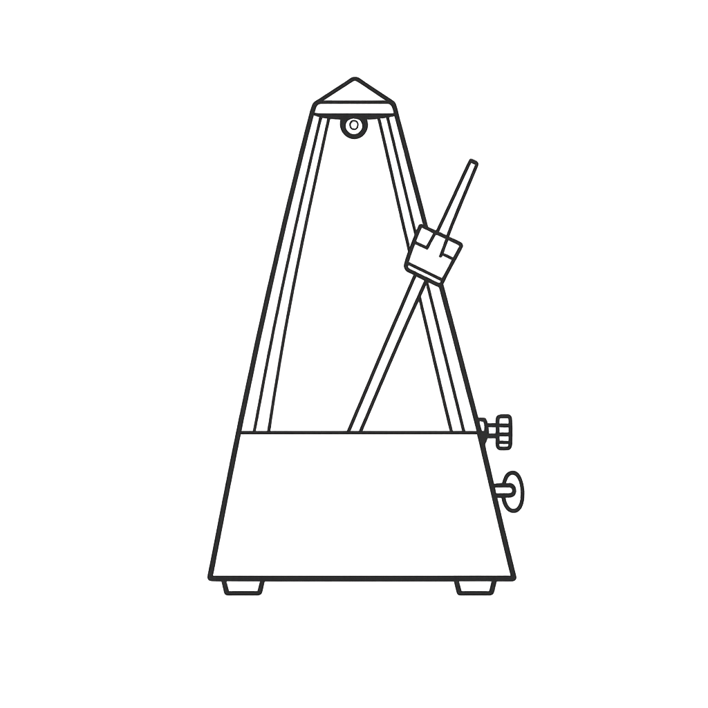

Service
Rotary

Integrations Metronome Tension Bridge
Bridge
Tension Bridge
Bridge
Hard rule: abstract tech shapes (clouds, gears, generic nodes) are forbidden. Replace with literal vintage artifacts. Lucide is the sanctioned CDN fallback for utility UI. Pending: monocle artifact not yet in asset library.